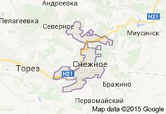

География города
Город расположен в юго-восточной части Донецкой Народной Республики. С севера граничит с Антрацитовским районом Луганской Народной Республики, на западе с городом Торез (ДНР), а на юго-востоке с Шахтерским районом (ДНР) который, в свою очередь, непосредственно граничит с Российской Федерацией. Расстояние до ближайшего международного аэропорта (г. Донецк) - 80 км, до ближайшего морского порта - 190 км (г. Мариуполь). Площадь 189,0 кв. км.